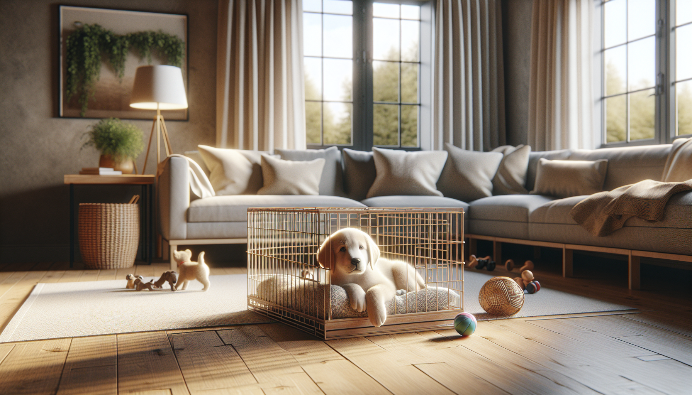

Bringing home a new puppy is exciting, heart-melting, and often a little overwhelming. Between potty accidents, midnight wake-ups, chewing, and the challenge of helping your puppy feel secure in a brand-new environment, many new dog owners wonder where to begin. One of the most useful tools you can use from day one is crate training.
When done correctly, crate training is not about punishment or confinement. It is about creating a safe, predictable space where your puppy can relax, sleep, and learn healthy routines. A crate can support house training, prevent destructive behavior, improve travel safety, and help your puppy build independence. For rescue adopters especially, a crate can also provide a sense of security during a major life transition.
In this complete guide, you will learn how to crate train a new puppy using positive reinforcement, realistic expectations, and science-backed methods that protect your puppy’s emotional well-being.
Dogs are not den animals in the simplistic way many people describe, but many puppies do learn to enjoy small, cozy resting spaces when those spaces consistently predict safety, sleep, and good things. A well-introduced crate can become your puppy’s bedroom: a place to settle rather than a place to feel isolated.
Crate training can help with several common puppy challenges:
The key point is this: the crate should feel like a predictable, rewarding place, not a place your puppy is forced into when humans are frustrated.
Before training begins, choose a crate that suits your puppy’s size, age, and needs. Wire crates, plastic airline-style crates, and soft-sided crates can all work, though wire and plastic crates are usually best for young puppies. The ideal crate is large enough for your puppy to stand up, turn around, and lie down comfortably, but not so large that one end becomes a bathroom corner. If you have a large-breed puppy, a crate with a divider panel lets you adjust space as your puppy grows.
Set the crate up in a location where your puppy can still feel part of family life. During the day, this is often the living room or kitchen. At night, many trainers recommend placing the crate in or near your bedroom at first, which can reduce distress and help you hear when your puppy needs a potty break.
Make the crate comfortable but practical:
Think of the setup as emotional design. The environment should communicate calm, not restriction.
The first rule of crate training is simple: do not rush. Many crate problems begin when a puppy is placed inside, the door is shut immediately, and the puppy is left to “figure it out.” That approach often creates fear, frustration, or panic. Instead, build positive associations gradually.
Start with the crate door open. Toss a few treats inside and let your puppy go in and out freely. Praise calmly. Feed meals near the crate, then just inside the crate, then farther in as your puppy becomes more comfortable. You can also scatter treats or use a stuffed Kong-type toy to encourage relaxed exploration.
Once your puppy is willingly entering the crate, try very short closed-door sessions. Close the door for one to five seconds while your puppy enjoys a treat, then open it before your puppy becomes upset. Gradually increase the duration over many repetitions.
A simple progression might look like this:
This process teaches your puppy an important lesson: going into the crate makes good things happen, and the door opening is predictable. If your puppy whines, scratches, or escalates quickly, the training has moved too fast. Go back to an easier step.
Puppies do best with routine. Crate time should be woven into a daily rhythm of potty breaks, play, training, meals, and naps. Most young puppies cannot stay awake calmly for long stretches, and overtired puppies often become mouthy, zoomy, and unable to settle. Planned crate naps can be a lifesaver.
As a general guideline, very young puppies may need a potty break every 1 to 2 hours during the day, after eating, after drinking, after play, and after waking up. Overnight capacity varies by age and individual development, so set expectations accordingly. A common rule of thumb is age in months plus one for maximum hours of bladder holding, but this is only an estimate, not a goal.
Here is an example routine for a young puppy:
Repeat this general cycle through the day. Crating should not replace exercise, enrichment, or social contact. It is one part of a balanced routine. If your puppy is spending long hours crated because of work schedules, arrange midday help from a family member, neighbor, pet sitter, or daycare option appropriate for puppies.
Even with the best intentions, some puppies struggle. The good news is that most crate issues can be improved by adjusting the plan.
Crying or whining in the crate: First, rule out real needs. Does your puppy need to potty? Is the puppy too hot, too cold, hungry, or overstimulated? If needs are met, whining often means the puppy is not yet comfortable at that duration. Shorten sessions and rebuild more gradually. Reward quiet moments and calm body language.
Puppy refuses to enter: Increase the value of what happens in the crate. Feed meals there, use higher-value treats, and avoid forcing entry. Play crate games where your puppy chooses to go in.
Accidents in the crate: Reassess crate size, schedule, and cleaning. Use an enzymatic cleaner to remove odor. Puppies who have had to eliminate in confinement before adoption may need extra patience and a carefully managed routine.
Nighttime distress: Keep the crate near you initially. A consistent bedtime routine, a final potty break, and a brief soothing presence can help. Some puppies settle better with soft background noise.
Separation-related panic: Intense drooling, frantic escape attempts, self-injury, or panic-level vocalization are not normal crate training bumps. These signs may indicate serious distress. Stop pushing crate duration and consult a qualified force-free trainer or veterinary behavior professional.
Never use the crate for punishment. If the crate predicts social isolation after “bad” behavior, your puppy will learn to avoid it. Instead, manage behavior proactively and teach alternatives.
Successful crate training depends as much on what you avoid as on what you practice. Some common mistakes can slow progress or create negative associations.
Your goal is not just crate compliance. Your goal is a puppy who feels safe, can settle, and trusts the process.
Many dogs continue to love their crates into adulthood, while others gradually need them less. There is no single timeline. Some puppies are ready for more freedom at six months; others need structure much longer, especially active chewers or dogs still learning house manners.
Before expanding freedom, ask yourself:
If the answer is yes, start gradually. Use puppy-proofed rooms, exercise pens, or baby gates before giving full house access. Keep the crate available as a resting option. Many dogs choose to nap there even after formal crate training is no longer necessary.
For rescue adopters, remember that decompression takes time. A newly adopted puppy may need extra structure and patience before being ready for more freedom. Progress should be based on behavior, not on a calendar.
Crate training a new puppy is one of the most practical and valuable skills you can teach, but success comes from empathy, consistency, and gradual progress. A crate should help your puppy feel secure, not trapped. By introducing it positively, keeping sessions age-appropriate, and responding thoughtfully to setbacks, you can create a foundation for easier potty training, better sleep, safer alone time, and a more confident dog.
If your puppy is struggling, do not assume you are failing. Most crate training challenges are simply signs that your puppy needs a slower pace, clearer routine, or more support. Stay patient, celebrate small wins, and remember that trust is the real goal.
Get our full Dog Training eBook series — new titles added weekly.